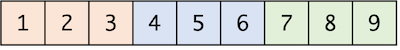
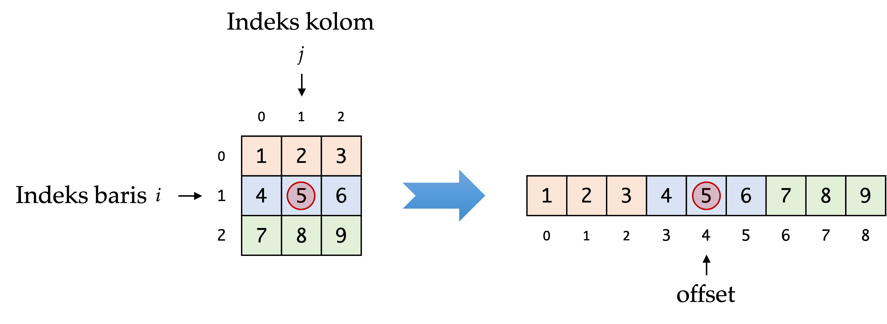
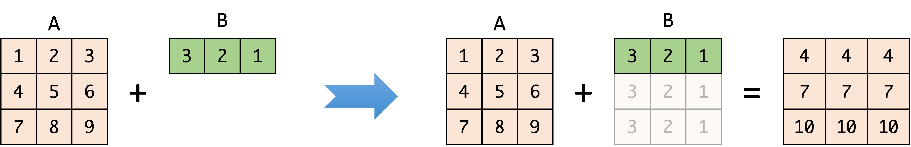
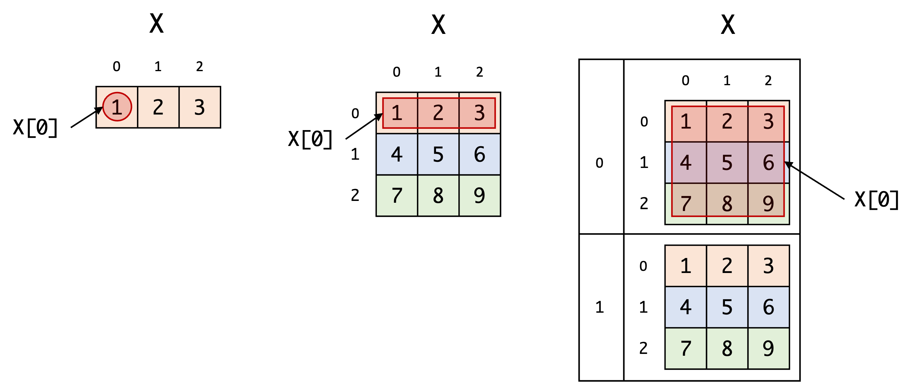
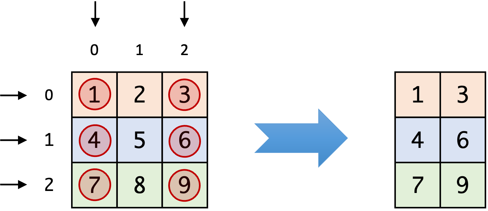
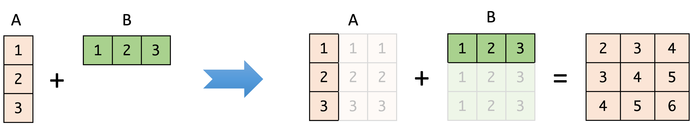

import numpy as np
x = np.array([[1, 2, 3], [4, 5, 6], [7, 8, 9]])
print(x)[[1 2 3]
[4 5 6]
[7 8 9]]Struktur data \(n\)-dimensional array (selanjutnya disebut “ndarray”), atau yang oleh beberapa framework deep learning disebut tensor, adalah tulang punggung teknologi machine learning. Struktur data ini seringkali taken for granted: kita bisa memakainya, namun tidak terlalu tahu mekanisme internalnya.
Penulis sengaja menghindari penggunaan istilah “tensor”, karena di disiplin ilmu matematika murni tensor memiliki arti yang berbeda. Walau tensor bisa direpresentasikan dengan ndarray, ia memiliki karakteristik lain, lebih dari sekadar ndarray, atau “matriks dengan dimensi lebih dari dua”.
Numpy (Harris et al. 2020) sendiri mendefinisikan ndarray sebagai array yang merepresentasikan elemen-elemen dalam multidimensi, di mana jumlah elemen pada masing-masing dimensi berjumlah seragam. Ini mirip seperti nested array, yaitu array dalam array (dalam array (dalam array (…))). Beberapa perkakas machine learning dan deep learning menyebutnya sebagai tensor. Semuanya sama-sama mengacu pada bentuk umum dari skalar, vektor, dan matriks. Jika skalar memiliki 0 dimensi, vektor memiliki 1 dimensi dan matriks memiliki 2 dimensi, maka ndarray bisa saja memiliki sembarang dimensi, \(N\), dengan \(N\geq 0\). Bisa 3 dimensi, 4 dimensi, dst.
Di library ndarray modern (NumPy ndarray (Harris et al. 2020), tensorflow tensor (Abadi et al. 2015), atau PyTorch tensor (Paszke et al. 2019)), jumlah dimensi, urutan dimensi, elemen data, dan aspek lain suatu ndarray harus dapat dimanipulasi saat run-time. Ini berbeda dengan nested array yang dimensinya sudah harus ditetapkan saat deklarasi/inisialisasi dan tidak bisa diubah lagi saat run-time. Misalnya, pada c/c++ kita bisa membuat array 2 dimensi:
int[3][3] x; Namun, hingga akhir program, x tetap 2 dimensi. Tidak berubah, dan tidak bisa diubah.
Ndarray array adalah komponen penting dalam perkembangan teknologi machine learning hingga deep learning. Biasanya ia digunakan untuk merepresentasikan data. Misal, data tabel dapat direpresentasikan dengan ndarray 2 dimensi berbentuk \(N_{baris} \times N_{kolom}\). Data citra dapat direpresentasikan dengan ndarray 4 dimensi berbentuk \(N_{sampel} \times N_{panjang} \times N_{lebar} \times N_{channel}\).
Walau bertajuk \(n\)-dimensional array, data numerik pada ndarray sebetulnya tidak tersusun berupa array dalam array (dalam array (dalam array (…))). Melainkan, data disimpan dalam format array 1 dimensi di memori. Ambil contoh NumPy ndarray berbentuk dengan 3 kolom dan 3 baris seperti ini:
import numpy as np
x = np.array([[1, 2, 3], [4, 5, 6], [7, 8, 9]])
print(x)[[1 2 3]
[4 5 6]
[7 8 9]]Namun, sebenarnya yang tersimpan di memori akan berupa array flat, kurang lebih (jika dibayangkan) akan seperti pada Gambar 1.

Pada praktiknya, saat kita mengakses elemen dengan indeks baris \(i\) dan kolom \(j\), indeks \((i,j)\) tersebut akan dikonversi menjadi offset yang menentukan lokasi elemen pada array 1 dimensi di memori. Ini diilustrasikan pada Gambar 2. Implementasi ndarray paling tidak memiliki dua komponen utama, yang memberinya karakteristik: shape dan strides.
Saat jumlah dimensi lebih dari 3, akan sangat sulit untuk mengandalkan visualisasi.

Shape, seperti namanya, ia menentukan bentuk suatu ndarray. Shape dapat direpresentasikan sebagai tuple. Contoh: shape dari ndarray 2 dimensi (matriks) berbentuk \(2 \times 2\) direpresentasikan dengan \((2,2)\). Secara formal, ndarray berdimensi \(N\) memiliki shape berupa \(\mathbf{d}=(d_0, d_1, ..., d_{N-1})\).
Jumlah langkah yang dibutuhkan untuk menuju dimensi selanjutnya. Array pada ilustrasi di atas memiliki strides \((3, 1)\). Artinya, untuk menuju ke elemen selanjutnya di dimensi ke-2 (kolom), cukup lompat 1 saja. Namun, di dimensi pertama (baris), kita harus melompati 3 elemen untuk menuju kolom yang sama namun di baris selanjutnya.
Jumlah elemen pada strides selalu sama dengan jumlah elemen pada shape. Strides direpresentasikan sebagai tuple juga: \(\mathbf{s}=(s_0, s_1, ..., s_{N-1})\). Kita bisa menghitung masing-masing elemen di strides, \(s_i\), berdasarkan shape dengan persamaan 1.
\[ s_i = \prod_{j+i+1}^{N-1} d_j \tag{1}\]
Posisi (secara fisik) dari elemen pada data ndarray di memori kita sebut offset. Elemen pertama dari data tersebut bisa diakses pada offset 0. Bagaimana jika kita ingin memperoleh offset berdasarkan index? Misal, kita mempunyai ndarray berbentuk \((3, 3)\). Maka strides-nya adalah \((3, 1)\) Jika kita ingin menghitung offset dengan index \((n_0, n_1)\), di mana \(n_0\) adalah index baris dan \(n_1\) adalah index kolom, maka kalkulasinya adalah
\[ offset = n_0 \times s_0 + n_1 \times s_1. \tag{2}\]
Sama halnya dengan mengakses ndarray 3 dimensi dengan index \((n_0, n_1, n_2)\), dengan \(n_2\) sebagai dimensi kedalaman. Pertama, peroleh strides-nya, kemudian hitung offset-nya dengan cara
\[ offset = n_0 \times s_0 + n_1 \times s_1 + n_2 \times s_2. \tag{3}\]
Istilah teknis dari index \((n_0, n_1, ..., n_{N-1})\) pada ndarray berdimensi \(N\) adalah multidimensional index. Secara umum, berdasarkan suatu multidimensional index \((n_0, n_1, ..., n_{N-1})\), offset dapat kita hitung dengan persamaan 4.
\[ offset = \sum_{i=0}^{N-1} s_i n_i \tag{4}\]
Dengan beberapa konsep di atas, kita siap untuk memulai implementasinya. Kita akan menyiapkan satu kelas utama yang akan menjadi representasi tipe data ndarray. Implementasi ini akan banyak meminjam desain dari NumPy.
Implementasi pada buku ini bukanlah yang paling efektif, pun yang paling optimal. Kita hanya akan fokus pada konsep dasar. Implementasi ndarray yang sebenarnya (seperti NumPy dan Pytorch) dibuat dengan bahasa yang terkompilasi seperti C/C++. Selain itu, sudah banyak optimasi yang dilakukan secara intensif oleh ratusan kontributor yang memang pakar di bidang komputasi performa tinggi (high-performance computing).
Kita mulai dengan sebuah kelas NDArray, yaitu kelas utama untuk struktur data ndarray, dengan 3 properties utama: data, shape, dan strides. Selain itu, sertakan juga fungsi untuk membuat ndarray dari python list, ndrray_from_list(). Di fungsi ndarray_from_list(), argumen untuk parameter lst akan menjadi data bagi ndarray baru. Property shape akan mengikuti argument untuk parameter shape, dan kita cast menjadi list (untuk konsistensi).
import math
class NDArray:
def __init__(self):
self.data = None
self.shape = None
self.strides = None
def ndarray_from_list(lst, *shape):
if len(lst) != math.prod(shape):
raise Exception(
f"List dengan panjang {len(lst)} tidak bisa dijadikan ndarray berbentuk {shape}"
)
x = NDArray()
x.data = lst
x.shape = list(shape)
x.strides = shape_to_strides(shape)
return x Saat inisialisasi ndarray, strides akan dihitung secara otomatis berdasarkan shape. Di bawah ini adalah implementasi dari fungsi shape_to_stride().
...
def shape_to_strides(shape):
strides = []
for i in range(len(shape)):
prod = 1
for j in range(i + 1, len(shape)):
prod *= shape[j]
strides.append(prod)
return stridesFungsi ini berdasarkan persamaan 1. Di tahap ini kita bisa mencoba menggunakan ndarray. Misalnya:
x = ndarray_from_list([1, 2, 3, 4], 2, 2)
print(x.data)
print(x.shape)
print(x.strides)[1, 2, 3, 4]
[2, 2]
[2, 1]Kode di atas menghasilkan objek ndarray dengan data berisi [1, 2, 3, 4] dan shape dengan nilai (2, 2) (ekuivalen dengan matriks \(2 \times 2\)).
Bagian actual_data adalah data dalam urutan sebenarnya pada memori. Bagian intended_data adalah data dalam urutan dengan versi yang dilihat oleh kita (user). Di contoh ini, keduanya masih sama, karena belum ada manipulasi apapun terhadap ndarray ini.
Selanjutnya, kita akan mengimplementasikan akses ke elemen pada ndarray dengan indeks tertentu (misal, berdasarkan baris \(i\), kolom \(j\)). Tambah method get_item() pada kelas NDArray.
class NDArray:
def __init__(self):
self.data = None
self.shape = None
self.strides = None
def get_item(self, *index):
actual_offset = sum(i * s for i, s in zip(index, self.strides))
return self.data[actual_offset] Fungsi ini menerima input multidimensional index dari elemen yang akan kita akses, kemudian mengonversi index tersebut menjadi offset. Contoh:
x = ndarray_from_list([1, 2, 3, 4], 2, 2)
# dengan multidimensional index, kita bisa mengakses elemen 3
# sebagai berikut, karena 3 berada di baris 1, kolom 0
item = x.get_item(1, 0)Method get_item akan mengonversi multidimensional index (1,0) menjadi offset (yaitu 2), kemudian mengakses elemen ke-2 pada x.data. Perhatikan bahwa actual_offset diperoleh berdasarkan persamaan 4. Kita juga bisa melakukan indexing pada ndarray dengan dimensi lebih tinggi, misalnya ndarray 3 dimensi, dengan cara yang sama:
# Buat ndarray berbentuk 2x2x2
x = ndarray_from_list([1, 2, 3, 4, 5, 6, 7, 8], 2, 2, 2)
# koordinat ini mengacu ke elemen angka 6
item = x.get_item(1, 0, 1)
print("Item pada koordinat (1,0,1):", item)Item pada koordinat (1,0,1): 6Seringkali kita akan membutuhkan akses data ndarray sebagai python list (flat/1-d list). Caranya adalah menampung semua elemen ndarray dari offset 0 hingga akhir. Pertama, implementasi method get_size() untuk membantu menghitung ukuran (atau panjang data seharusnya) dari data ndarray. Sederhana saja, ukuran ndarray merupakan hasil perkalian dari elemen pada shape. Sebagai contoh, ndarray 2 dimensi (matriks) berbentuk \((3, 2)\) akan memiliki ukuran \(3 \times 2 = 6\). Kedua, implementasi fungsi offset_to_index() untuk mengonversi balik offset ke list berisi multidimensional index.
class NDArray:
def __init__(self):
self.data = None
self.shape = None
self.strides = None
def get_item(self, *index):
actual_offset = sum(i * s for i, s in zip(index, self.strides))
return self.data[actual_offset]
def get_size(self):
return math.prod(self.shape)
def as_list(self):
result = []
for i in range(self.get_size()):
index = offset_to_index(self, i)
value = self.get_item(*index)
result.append(value)
return result
...
def offset_to_index(arr, offset):
index = [None for i in range(len(arr.shape))]
tmp_offset = offset
for i in reversed(range(len(arr.shape))):
index[i] = int(tmp_offset % arr.shape[i])
tmp_offset /= arr.shape[i]
return indexPertanyaan yang mungkin muncul namun akan terjawab nanti: “mengapa untuk mencari ukuran ndarray tidak menggunakan len(self.data) saja?”
Sampai saat ini, kita masih belum akan mencetak ndarray sekarang, karena untuk dapat mencetak dengan benar (data berikut juga bentuknya), kita membutuhkan kalkulasi lebih lanjut. Namun, sementara ini kita akan menggunakan cara “curang” agar bisa mencetak ndarray dengan bentuk yang sesuai dengan memanfaatkan NumPy. Nanti kita akan ganti dengan implementasi kita sendiri.
Implementasikan 2 fungsi berikut ini. Yang pertama untuk mencetak dengan format tertentu (pretty print), yang kedua untuk mencetak atribut ndarray untuk mempermudah proses debugging.
import pprint
import numpy as np
...
def print_ndarray(arr):
# Walau menggunakan numpy, data dan shape tetap berdasarkan
# implementasi kita sendiri
x = np.array([float(i) for i in arr.as_list()]).reshape(*arr.shape)
print(x.__repr__())
def debug_print(arr):
info = dict(
actual_data=arr.data,
intended_data=arr.as_list(),
shape=arr.shape,
strides=arr.strides,
)
pprint.pprint(info)Kita dapat menggunakannya sebagai berikut.
x = ndarray_from_list([1, 2, 3, 4], 2, 2)
print("Array:")
print_ndarray(x)
print()
print("Debug info:")
debug_print(x) Array:
array([[1., 2.],
[3., 4.]])
Debug info:
{'actual_data': [1, 2, 3, 4],
'intended_data': [1, 2, 3, 4],
'shape': [2, 2],
'strides': [2, 1]}Sampai di titik ini, kita akan mulai bisa melihat “keajaiban” trik manipulasi strides dan shape. Ini juga alasan mengapa NumPy bisa sangat efisien.
Saat melakukan transposisi pada suatu ndarray x, berarti kita melakukan pertukaran antara elemen baris dan kolom dari x. Ini bisa saja kita lakukan dengan melakukan iterasi atas baris dan kolom, kemudian menukar x[i][j] dengan x[j][i].
Namun, sebetulnya kita tidak perlu melakukan iterasi yang mahal itu. Triknya adalah, kita cukup membalik x.shape dan x.strides. Misal, ndarray berbentuk \((3, 2)\) dapat ditransposisi menjadi berbentuk \((2, 3)\) dengan elemen baris dan kolom yang ditukar, seperti ini:
### ndarray mula-mula
x = ndarray_from_list([1, 2, 3, 4, 5, 6], 3, 2)
print("Sebelum transposisi:")
print("Array:")
print_ndarray(x)
print()
print("Debug info:")
debug_print(x)
### Dua baris di bawah ini adalah trik transposisi kita
x.shape = list(reversed(x.shape))
x.strides = list(reversed(x.strides))
print()
print("Setelah transposisi:")
print("Array:")
print_ndarray(x)
print()
print("Debug info:")
debug_print(x)Sebelum transposisi:
Array:
array([[1., 2.],
[3., 4.],
[5., 6.]])
Debug info:
{'actual_data': [1, 2, 3, 4, 5, 6],
'intended_data': [1, 2, 3, 4, 5, 6],
'shape': [3, 2],
'strides': [2, 1]}
Setelah transposisi:
Array:
array([[1., 3., 5.],
[2., 4., 6.]])
Debug info:
{'actual_data': [1, 2, 3, 4, 5, 6],
'intended_data': [1, 3, 5, 2, 4, 6],
'shape': [2, 3],
'strides': [1, 2]}Setelah transposisi, actual_data berbeda dengan intended_data karena strides dan shape, yang menentukan urutan iterasi per-elemen, telah berubah (dimanipulasi). Ternyata kita sama sekali tidak perlu mengubah urutan data sebenarnya di memori saat melakukan transposisi. Yang perlu dilakukan adalah memanipulasi cara kita (user) dalam melihat urutan; dan cara yang bisa dilakukan untuk memanipulasi user dalam melihat urutan adalah dengan memanipulasi shape dan strides. Jadi, jika ada ndarray berbentuk (1000000, 1000000), kita tidak perlu melakukan iterasi sebanyak ratusan ribu kali untuk dalam melakukan transposisi. Cukup mainkan saja shape dan stride-nya.
Banyak pustaka ndarray modern mengadopsi mekanisme broadcasting. Perhatikan contoh pada Gambar 3.

Saat melakukan operasi aritmatika antara kedua ndarray dengan bentuk berbeda, ndarray yang lebih kecil seolah-olah diduplikat hingga kedua ndarray memiliki jumlah baris yang sama. Mekanisme ini disebut broadasting: salah satu atau kedua ndarray dengan ukuran berbeda di-broadcast satu sama lain, sehingga keduanya memiliki bentuk yang kompatibel (selama memenuhi syarat tertentu). Dengan trik stride, kita tidak perlu membuat duplikat yang tidak perlu di memori:
B = ndarray_from_list([5, 5, 5], 3)
print("Mula-mula:")
print_ndarray(B)
debug_print(B)
# Dua baris berikut ini adalah proses broadcasting
# ndarray ukuran (3,) menjadi (3, 3)
B.shape = [3] + B.shape # Prepend menambah dimensi berukuran 3 di depan
B.strides = [0] + B.strides # Pepend stride untuk dimensi yang baru dengan 0
print()
print("Setelah broadcasting:")
print_ndarray(B)
debug_print(B)Mula-mula:
array([5., 5., 5.])
{'actual_data': [5, 5, 5],
'intended_data': [5, 5, 5],
'shape': [3],
'strides': [1]}
Setelah broadcasting:
array([[5., 5., 5.],
[5., 5., 5.],
[5., 5., 5.]])
{'actual_data': [5, 5, 5],
'intended_data': [5, 5, 5, 5, 5, 5, 5, 5, 5],
'shape': [3, 3],
'strides': [0, 1]}Lagi-lagi, yang berubah hanya shape dan strides, dan data di memori tidak berubah sama sekali. Dengan shape dan strides yang demikian, persepsi user akan dihadapkan dengan data ndarray yang (secara linear) tersusun seperti pada intended_data.
Ini juga menjawab pertanyaan mengapa kita tidak menggunakan len(self.data) di method get_size() untuk memperoleh ukuran ndarray. Untuk contoh di atas, ekspresi len(self.data) akan menghasilkan nilai 3, sementara yang kita harapkan adalah 9 (karena broadcasting). Maka, prod(self.shape) lebih tepat, karena ukuran ndarray selalu bergantung pada bentuknya.
Indexing adalah operasi yang bertujuan untuk mengambil atau menyeleksi elemen-elemen dari array. Elemen-elemen ini diakses dengan suatu index, yaitu sesuatu yang menunjukkan lokasi elemen di suatu ndarray. Kita akan mengimplementasikan tiga jenis indexing: indexing sederhana, indexing dengan integer array, dan indexing dengan slicing.
Ndarray yang kita buat akan bisa diindeks dengan sintaks standar python, x[i], di mana x adalah ndarray dan i adalah indikator penyeleksinya. Ekspresi x[0] berarti kita mengambil elemen pertama pada ndarray. Jika ndarray berdimensi 1 (vektor), maka ambil elemen skalar pertama. Jika ndarray berdimensi 2 (matriks), maka ambil elemen pertama di dimensi pertama (baris pertama). Begitu juga, jika ndarray berdimensi 3 (tensor), maka ambil elemen pertama di dimensi pertama (matriks pertama). Ini diilustrasikan di Gambar 4.

Indexing dengan integer array memungkinkan kita untu menyeleksi sembarang elemen pada suatu ndarray berdasarkan indeks pada dimensi-dimensinya. Tiap integer array mewakili beberapa indeks terhadap dimensinya. Sebagai contoh, kita memiliki ndarray x dengan shape (3, 3). Kita bisa menyeleksi elemen di masin-masing dimensi dengan cara, misalnya, x[[0, 1, 2], [0, 2]]. Ini artinya, pada dimensi pertama (baris), elemen di indeks \(0, 1\), dan \(2\) dipilih. Kemudian, pada dimensi kedua (kolom), hanya yang berindeks \(0\) dan \(2\) yang diseleksi. Proses seleksi ini dan hasilnya ditunjukkan pada Gambar 5.

Selayaknya elemen dari python list yang bisa di-slice, x[:5] ndarray yang kita implementasikan juga dapat melakukan indexing dengan slicing. Konsep slicing ini mirip dengan indexing dengan integer array. Bedanya, dengan integer array kita secara eksplisit menentukan integer array yang akan menjadi selektor. Sedangkan denga slicing, kita mengakses elemen via objek slice. Namun pada akhirnya objek slice ini akan dianggap seolah-olah dia ini integer array.
NDArrayTambah properti indices dan implementasikan method rebuild_index(). Perbarui juga fungsi ndarray_from_list dengan menambahkan x.rebuild_index().
class NDArray:
def __init__(self):
self.data = None
self.shape = None
self.strides = None
self.indices = None # properti baru
def get_item(self, *index):
actual_offset = sum(i * s for i, s in zip(index, self.strides))
return self.data[actual_offset]
def get_size(self):
return math.prod(self.shape)
def as_list(self):
result = []
for i in range(self.get_size()):
index = offset_to_index(self, i)
value = self.get_item(*index)
result.append(value)
return result
def rebuild_index(self): # method baru
indices = []
for s in self.shape:
indices.append(list(range(s)))
self.indices = indices
...
def ndarray_from_list(lst, *shape):
if len(lst) != math.prod(shape):
raise Exception(
f"List dengan panjang {len(lst)} tidak bisa dijadikan ndarray berukuran {shape}"
)
x = NDArray()
x.data = lst
x.shape = list(shape)
x.strides = shape_to_strides(shape)
x.rebuild_index() # tambahkan baris ini
return xMethod rebuild_index() bertujuan untuk menginisialisasi indeks pada masing-masing dimensi dengan list berisi \(0, 1, ..., d_i\), di mana \(d_i\) adalah panjang dimensi ke-\(i\). Indeks-indeks ini akan berguna seperti strides, yang memungkinkan kita melakukan trik penyeleksian elemen-elemen pada ndarray.
Sekarang kita sudah memiliki informasi indeks pada masing-masing dimensi, sehingga fungsi offset_to_index perlu diperbarui.
def offset_to_index(arr, offset):
index = [None for _ in range(len(arr.shape))]
tmp_offset = offset
for i in reversed(range(len(arr.shape))):
index[i] = arr.indices[i][int(tmp_offset % arr.shape[i])]
tmp_offset /= arr.shape[i]
return indexAgar bisa menggunakan operator indeks [ ] pada ndarray x (misal, x[...]), kita perlu melakukan override dunder method __getitem__().
class NDArray:
def __init__(self):
self.data = None
self.shape = None
self.strides = None
self.indices = None
def get_item(self, *index):
actual_offset = sum(i * s for i, s in zip(index, self.strides))
return self.data[actual_offset]
def get_size(self):
return math.prod(self.shape)
def as_list(self):
result = []
for i in range(self.get_size()):
index = offset_to_index(self, i)
value = self.get_item(*index)
result.append(value)
return result
def rebuild_index(self):
indices = []
for s in self.shape:
indices.append(list(range(s)))
self.indices = indices
def __getitem__(self, indices): # method baru
# Memastikan agar indices berupa iterable
indices = (indices,) if not isinstance(indices, tuple) else indices
new_indices = []
for i, index in enumerate(indices):
if isinstance(index, int):
new_indices.append([index])
elif isinstance(index, slice):
start = 0 if index.start is None else index.start
step = 1 if index.step is None else index.step
stop = self.shape[i] if index.stop is None else index.stop
index = list(range(start, stop, step))
new_indices.append(index)
else:
try:
index = [i for i in index]
new_indices.append(index)
except:
raise Exception(f"Indeks tidak valid: {index}")
if len(self.shape) > len(indices):
new_indices.append(*self.indices[len(indices) :])
new_shape = [len(index) for index in new_indices]
x = NDArray()
x.data = self.data
x.strides = self.strides
x.shape = new_shape
x.indices = new_indices
return xDi tahap ini kita sudah bisa melakukan indexing, seperti contoh-contoh berikut ini:
# Buat ndarray dengan bentuk (3, 3)
x = ndarray_from_list(
[1, 2, 3,
4, 5, 6,
7, 8, 9],
3, 3
)
print_ndarray(x[0])
print_ndarray(x[:, 1])array([[1., 2., 3.]])
array([[2.],
[5.],
[8.]])Meminjam istilah dari NumPy, fungsi universal (universal function) mengacu pada fungsi matematis yang dapat digunakan pada ndarray. Fungsi universal bisa meliputi fungsi trigonometri, fungsi aritmatika, fungsi statistika, dan sebagainya. Di implementasi kita, fungsi universal memiliki karakteristik sebagai berikut:
Fungsi unary adalah fungsi yang memiliki 1 parameter. Sebagai contoh, \(\sin(x)\), \(\log(x)\), \(\exp(x)\) adalah contoh fungsi unary. Operasi aritmatik negatif \(-x\) juga bisa diekspresikan sebagai fungsi unary, misalnya \(neg(x)\). Di implementasi kita, fungsi unary diaplikasikan pada masing-masing elemen pada ndarray. Implementasi dari bentuk umum fungsi unary dapat dilakukan sebagai berikut.
...
def ufunc(arr, func):
new_data = []
for val in arr.data:
new_data.append(func(val))
x = NDArray()
x.data = new_data
x.shape = arr.shape
x.strides = arr.strides
x.indices = arr.indices
return xPada dasarnya, fungsi ini menerima argumen berupa ndarray dan fungsi unary apa yang akan diaplikasikan. Fungsi ufunc() akan melakukan iterasi satu-persatu pada elemen ndarray kemudian memanggil func(x) dan menyimpan hasilnya di new_data. Variabel new_data ini yang kemudian menjadi data baru bagi ndarray kembalian fungsi ufunc(). Kita dapat menurunkan fungsi unary yang lebih spesifik lagi.
import math
...
def exp(arr):
# kita bisa menggunakan mem-pass lambda function
return ufunc(arr, lambda x: math.exp(x))
def sin(arr):
# kita juga bisa langsung mem-pass fungsi dari module math
return ufunc(arr, math.sin)Berikut ini adalah contoh penggunaan dari kedua fungsi di atas:
x = ndarray_from_list([math.radians(x) for x in [0, 30, 90]], 3, 1)
print_ndarray(sin(x))
print()
print_ndarray(exp(x))array([[0. ],
[0.5],
[1. ]])
array([[1. ],
[1.68809179],
[4.81047738]])Jika fungsi unary memiliki satu parameter, fungsi binary memiliki dua parameter. Banyak operasi aritmatika yang dapat direpresentasikan oleh fungsi binary, seperti penjumlahan, perkalian, pengurangan, dan sebagainya. Fungsi binary sebagai fungsi penjumlahan dua ndarray akan bekerja selayaknya penjumlahan masing-masing elemen pada kedua ndarray tersebut. Karena itulah, bentuk dari kedua ndarray harus kompatibel. Jika salah satu atau kedua ndarray yang akan kita masukkan dalam fungsi binary memiliki bentuk berbeda, maka kita perlu melakukan broadcasting.
Di bagian awal kita sudah menyinggung sedikit tentang broadcasting, proses penyesuaian bentuk dua ndarray sehingga keduanya memiliki bentuk yang kompatibel. Broadcasting diperlukan saat kita akan melakukan fungsi binary, karena kita perlu menerapkan fungsi per-elemen, dan masing-masing elemen di ndarray pertama berkorespondensi satu-satu dengan elemen di ndarray kedua (dengan koordinat yang sama).
Broadacsting bisa berarti menyesuaikan bentuk ndarray yang lebih “kecil” agar kompatibel dengan yang lebih besar (Gambar 3). Namun, broadcasting juga bisa berarti kedua ndarray saling menyesuaikan satu sama lain hingga kompatibel. Ini seperti ditunjukkan pada Gambar 6.

Broadcasting memiliki aturan khusus. Kita akan mengadopsi aturan dari NumPy. Misal, \(d^A_i\) adalah elemen shape ndarray \(A\) pada dimensi ke-\(i\), dan \(d^B_i\) adalah elemen shape ndarray \(B\) pada dimensi ke-\(i\). Misalkan juga, \(N_A\) dan \(N_B\) adalah jumlah dimensi dari ndarray \(A\) dan \(B\). Maka:
shape dari ndarray yang lebih sedikit dimensinya dibubuhkan dengan angka 1 (dari kiri), hingga \(N_A = N_B\).shape kedua ndarray tidak sama untuk semua dimensi; atau jika tidak sama dengan 1, maka broadcasting tidak dapat dilakukan. Munculkan pesan error....
def broadcast(arr1, arr2):
# Kedua ndarray berukuran sama, tidak ada yang perlu dilakukan, dan
# langsung kembali
if arr1.shape == arr2.shape:
return arr1, arr2
# Jumlah dimensi baru yang akan menjadi target
new_ndims = max(len(arr1.shape), len(arr2.shape))
# Aturan 1
new_shape_1 = [1 for _ in range(new_ndims - len(arr1.shape))] + arr1.shape
new_shape_2 = [1 for _ in range(new_ndims - len(arr2.shape))] + arr2.shape
# Karena melibatkan strides, maka harus kita sesuaikan juga. Strides pada dimensi
# yang di-expand, perlu di-set menjadi 0
new_strides_1 = [0 for _ in range(new_ndims - len(arr1.strides))] + arr1.strides
new_strides_2 = [0 for _ in range(new_ndims - len(arr2.strides))] + arr2.strides
for i in range(new_ndims):
# Aturan 2
if new_shape_1[i] != new_shape_2[i]:
if new_shape_1[i] < new_shape_2[i] and new_shape_1[i] <= 1:
new_strides_1[i] = 0
new_shape_1[i] = new_shape_2[i]
elif new_shape_2[i] < new_shape_1[i] and new_shape_2[i] <= 1:
new_strides_2[i] = 0
new_shape_2[i] = new_shape_1[i]
else:
# Aturan 3
raise Exception(
"Tidak bisa melakukan broadcasting pada array dengan bentuk {arr1.shape} dan {arr2.shape}"
)
new_arr1 = NDArray()
new_arr1.data = arr1.data
new_arr1.shape = new_shape_1
new_arr1.strides = new_strides_1
new_arr1.rebuild_index()
new_arr2 = NDArray()
new_arr2.data = arr2.data
new_arr2.shape = new_shape_2
new_arr2.strides = new_strides_2
new_arr2.rebuild_index()
return new_arr1, new_arr2Dengan diimplementasikannya fungsi broadcasting, implementasi fungsi binary akan menjadi mudah. Katakanlah, kita ingin mengimplementasikan fungsi add, subtract, multiply, dan divide. Yang perlu dilakukan mirip seperti apa yang kita lakukan dengan fungsi unary:
...
def bfunc(arr1, arr2, func):
# Pertama, pastikan shape arr1 dan arr2 kompatibel
arr1, arr2 = broadcast(arr1, arr2)
data1 = arr1.as_list()
data2 = arr2.as_list()
new_data = []
for x, y in zip(data1, data2):
new_data.append(func(x, y))
return ndarray_from_list(new_data, *arr1.shape)
def add(arr1, arr2):
return bfunc(arr1, arr2, lambda x, y: x + y)
def subtract(arr1, arr2):
return bfunc(arr1, arr2, lambda x, y: x - y)
def multiply(arr1, arr2):
return bfunc(arr1, arr2, lambda x, y: x * y)
def divide(arr1, arr2):
return bfunc(arr1, arr2, lambda x, y: x / y)Kita bisa melakukan operator overloading sehingga kita bisa melakukan penjumlahan ndarray x dan y dengan cara menuliskan x + y, tanpa harus memanggil fungsi add(x, y). Operator overloading dapat dilakukan dengan cara melakukan override pada dunder method yang relevan. Misal, untuk penjumlahan:
class NDArray:
def __init__(self):
self.data = None
self.shape = None
self.strides = None
self.indices = None
def get_item(self, *index):
actual_offset = sum(i * s for i, s in zip(index, self.strides))
return self.data[actual_offset]
def get_size(self):
return math.prod(self.shape)
def as_list(self):
result = []
for i in range(self.get_size()):
index = offset_to_index(self, i)
value = self.get_item(*index)
result.append(value)
return result
def rebuild_index(self):
indices = []
for s in self.shape:
indices.append(list(range(s)))
self.indices = indices
def __getitem__(self, indices):
# Memastikan agar indices berupa iterable
indices = (indices,) if not isinstance(indices, tuple) else indices
new_indices = []
for i, index in enumerate(indices):
if isinstance(index, int):
new_indices.append([index])
elif isinstance(index, slice):
start = 0 if index.start is None else index.start
step = 1 if index.step is None else index.step
stop = self.shape[i] if index.stop is None else index.stop
index = list(range(start, stop, step))
new_indices.append(index)
else:
try:
index = [i for i in index]
new_indices.append(index)
except:
raise Exception(f"Indeks tidak valid: {index}")
if len(self.shape) > len(indices):
new_indices.append(*self.indices[len(indices) :])
new_shape = [len(index) for index in new_indices]
x = NDArray()
x.data = self.data
x.strides = self.strides
x.shape = new_shape
x.indices = new_indices
return x
def __add__(self, other):
return add(self, other)
def __sub__(self, other):
return subtract(self, other)
def __mul__(self, other):
return multiply(self, other)
def __truediv__(self, other):
return divide(self, other)Daftar lengkap operator yang dapat di-overload dapat dilihat di dokumentasi python1
Menggunakannya cukup sebagai berikut:
x = ndarray_from_list([1, 2, 3], 3)
y = ndarray_from_list([1, 2, 3], 3, 1)
print_ndarray(x)
print_ndarray(y)
z = x + y # menimpa operator + dengan fungsi add
print_ndarray(z)
z = x - y # menimpa operator - dengan fungsi subtract
print_ndarray(z)
z = x * y # menimpa operator * dengan fungsi multiply
print_ndarray(z)
z = x / y # menimpa operator / dengan fungsi divide
print_ndarray(z)array([1., 2., 3.])
array([[1.],
[2.],
[3.]])
array([[2., 3., 4.],
[3., 4., 5.],
[4., 5., 6.]])
array([[ 0., 1., 2.],
[-1., 0., 1.],
[-2., -1., 0.]])
array([[1., 2., 3.],
[2., 4., 6.],
[3., 6., 9.]])
array([[1. , 2. , 3. ],
[0.5 , 1. , 1.5 ],
[0.33333333, 0.66666667, 1. ]])Dalam komputasi saintifik, notasi ini akan lebih singkat dan mudah dibaca daripada memanggil fungsi secara berantai.
Pembaca dapat bereksplorasi sendiri untuk mengimplementasikan fungsi binary lainnya.
https://docs.python.org/3/reference/datamodel.html#emulating-numeric-types↩︎